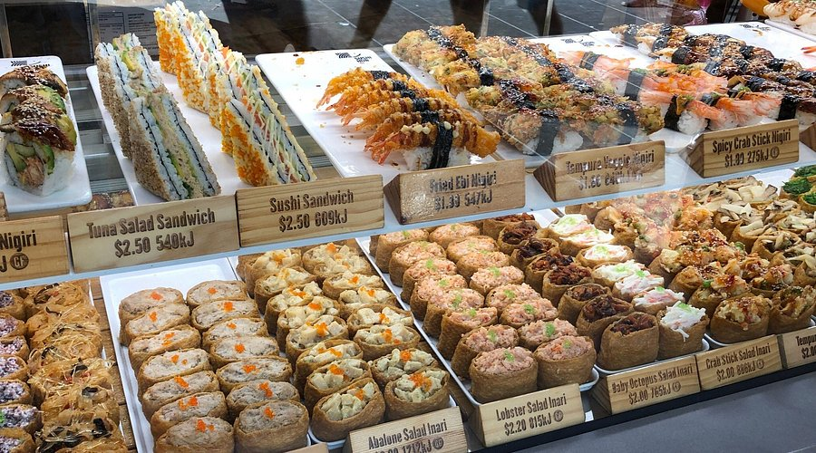
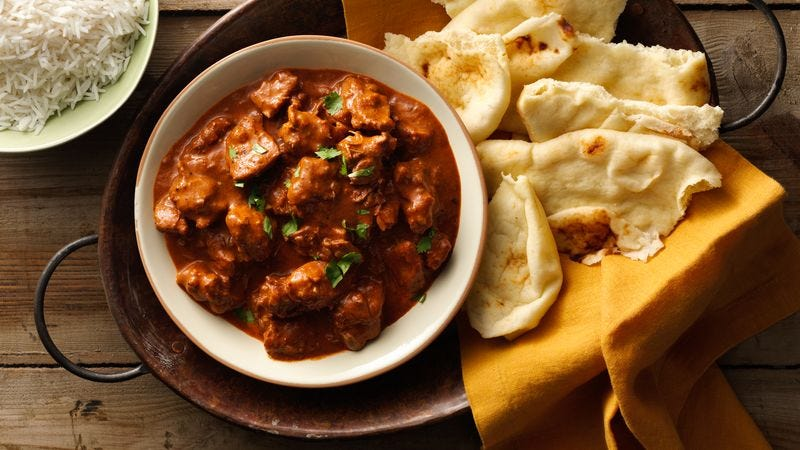

Restaurants
Six restaurants available on MelbEats. Each listing includes the cuisine type, signature dishes, price range, and deposit amount required for a reservation.
Sakura Japanese Kitchen
Japanese

Sakura is a mid-range Japanese restaurant in Fitzroy specialising in sushi, sashimi, and hot dishes. The menu covers most Japanese staples and the quality is consistent. Good option for both casual dinners and group bookings.
| Signature Dish | Price |
|---|---|
| Sashimi Platter (12 pieces) | $28 |
| Chicken Karaage | $18 |
| Tonkotsu Ramen | $22 |
- Average price per person: $35–$50
- Deposit for reservation: $20
- Dietary options: Gluten-free available
Tandoor House
Indian

Tandoor House is a halal Indian restaurant in the CBD. The menu focuses on North Indian cuisine with a range of curries, tandoor dishes, and breads. Portions are generous and prices are reasonable. Popular with families and groups.
| Signature Dish | Price |
|---|---|
| Butter Chicken | $24 |
| Lamb Rogan Josh | $26 |
| Garlic Naan | $5 |
- Average price per person: $25–$40
- Deposit for reservation: $15
- Dietary options: Halal certified, vegetarian options available
Green Bowl
Vegan / Vegetarian

Green Bowl is a fully plant-based restaurant in Collingwood. The menu changes seasonally and focuses on whole ingredients. Everything on the menu is vegan. Good for people with dietary restrictions or anyone looking for a lighter meal.
| Signature Dish | Price |
|---|---|
| Roasted Veggie Grain Bowl | $20 |
| Mushroom and Lentil Burger | $18 |
| Coconut Curry with Rice | $19 |
- Average price per person: $20–$35
- Deposit for reservation: $10
- Dietary options: Fully vegan, gluten-free options available
The Steak Room
Steakhouse

The Steak Room is an upmarket steakhouse in Southbank. It focuses on Australian beef with a range of cuts and cooking styles. The wine list is extensive. Better suited to business dinners or special occasions given the price point.
| Signature Dish | Price |
|---|---|
| 300g Ribeye | $55 |
| Wagyu Beef Tenderloin | $75 |
| Truffle Mashed Potato | $14 |
- Average price per person: $70–$120
- Deposit for reservation: $40
- Dietary options: Gluten-free available on request
Pho Saigon
Vietnamese

Pho Saigon is a Vietnamese restaurant in Richmond on Victoria Street. The menu covers pho, banh mi, rice dishes, and vermicelli bowls. Affordable and quick. One of the better options in the area for a filling meal without spending much.
| Signature Dish | Price |
|---|---|
| Beef Pho (large) | $17 |
| Lemongrass Chicken Rice | $16 |
| Prawn Spring Rolls | $12 |
- Average price per person: $15–$25
- Deposit for reservation: $10
- Dietary options: Vegetarian pho available, gluten-free rice dishes
Lupa Trattoria
Italian

Lupa Trattoria is an Italian restaurant in Carlton. The menu covers pasta, pizza, and classic mains. The space is casual but the food is well made. A good option for families or anyone wanting a reliable Italian meal at a reasonable price.
| Signature Dish | Price |
|---|---|
| Spaghetti Carbonara | $24 |
| Margherita Pizza | $20 |
| Tiramisu | $12 |
- Average price per person: $30–$50
- Deposit for reservation: $20
- Dietary options: Vegetarian options available